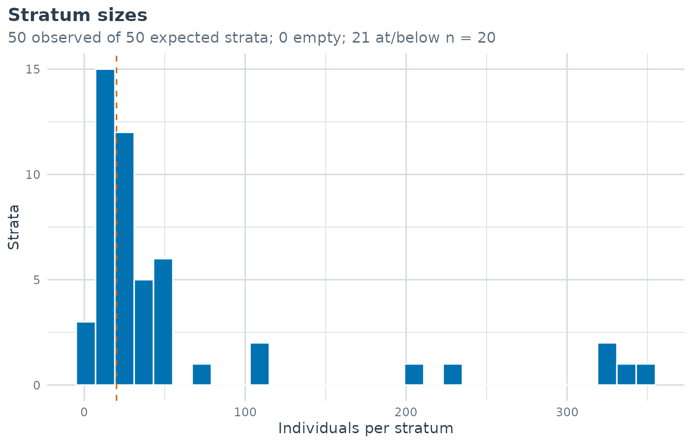

Planning a MAIHDA analysis
Hamid Bulut
2026-07-16
Source:vignettes/planning_a_study.Rmd
planning_a_study.RmdBefore you fit
Most of the decisions that make or break a MAIHDA analysis are taken before any model is fitted: which dimensions define the strata, how many cells that implies, and whether the sample can populate them. This vignette walks through those design decisions, with small runnable checks you can do on your own data first to evaluate the dimensions, the number of strata, and the analytic sample.
Is MAIHDA the right tool?
MAIHDA is for questions of the form “how much of the variation in an outcome lies between people’s intersectional social positions, and how much of that is more than the sum of its parts?” It is well suited when:
- you have several categorical social dimensions (gender, race/ethnicity, education, class, …) whose joint categories define the strata;
- the outcome is measured at the individual level;
- you have enough individuals to populate the cells (see below).
The central tradeoff: more dimensions means emptier cells
Strata are the cross-product of the dimensions, so
cell counts fall off fast as you add dimensions.
make_strata() builds the strata and returns a
strata_info table of counts you can inspect before
modelling:
s2 <- make_strata(maihda_health_data, vars = c("Gender", "Race"))
nrow(s2$strata_info) # number of strata
#> [1] 10
summary(s2$strata_info$n) # cell-size distribution
#> Min. 1st Qu. Median Mean 3rd Qu. Max.
#> 75 102 127 300 175 1044Add education and the same sample splits into many more, smaller cells:
s3 <- make_strata(maihda_health_data, vars = c("Gender", "Race", "Education"))
nrow(s3$strata_info)
#> [1] 50
summary(s3$strata_info$n)
#> Min. 1st Qu. Median Mean 3rd Qu. Max.
#> 1.00 13.25 25.50 60.00 45.50 349.00
sum(s3$strata_info$n < 10) # how many strata have < 10 people
#> [1] 5Each extra dimension multiplies the number of strata and divides the people among them. Small cells are not fatal, (partial pooling shrinkage is exactly what protects MAIHDA against noisy small strata) but they have consequences (next section). A useful rule: choose the fewest dimensions that answer your question, and look at the cell-size distribution before committing.
One call: maihda_describe()
The checks above — and the rest of a pre-model “Table 1” — come
bundled in maihda_describe(). It builds the strata with the
same machinery as fit_maihda() (identical stratum IDs,
labels, and counts), then reports the total and complete-case analytic
sample, the observed vs. expected strata (empty cells enumerated, small
cells flagged), each dimension’s distribution, a family-aware outcome
summary per stratum (proportions for a binary outcome, never a Gaussian
mean/SD), missingness, and a set of data-quality warnings:
desc <- maihda_describe(BMI ~ Age + (1 | Gender:Race:Education),
data = maihda_health_data, flag_stratum_n = 20)
desc
#> MAIHDA Sample Description
#> =========================
#>
#> Outcome: BMI | Family: gaussian | Summary: mean/SD (gaussian)
#> Dimensions: Gender, Race, Education
#>
#> Sample:
#> Rows (total): 3,000
#> Missing outcome: 0 (0.0%)
#> Outside strata (missing dims): 0
#> Analytic sample (complete case): 3,000
#>
#> Observed outcome (3,000 non-missing): mean 28.883 (SD 6.743), median 27.865, range 15.800 to 81.250
#>
#> Strata (50 observed / 50 expected, 0 empty):
#> Cell sizes: min 1, median 25.5, max 349; 21 strata at/below n = 20 (flagged)
#> Smallest strata:
#> female × Black × 8th Grade n = 1
#> female × Mexican × College Grad n = 5
#> female × Other × 9 - 11th Grade n = 7
#> male × Black × 8th Grade n = 8
#> female × Other × High School n = 9
#> (full table in $strata)
#>
#> Dimensions:
#> Gender: female 1,527 (50.9%), male 1,473 (49.1%)
#> Race: Black 336 (11.2%), Hispanic 166 (5.5%), Mexican 242 (8.1%), White
#> 2,034 (67.8%), Other 222 (7.4%)
#> Education: 8th Grade 196 (6.5%), 9 - 11th Grade 366 (12.2%), High School
#> 632 (21.1%), Some College 960 (32.0%), College Grad 846 (28.2%)
#>
#> Warnings:
#> ! 21 strata have n <= 20; smallest: 'female × Black × 8th Grade' (n=1),
#> 'female × Mexican × College Grad' (n=5), 'female × Other × 9 - 11th
#> Grade' (n=7). Partial pooling shrinks small-stratum estimates toward
#> the mean; expect wide intervals for these cells.Every element is an export-ready data frame —
desc$strata is the per-stratum Table 1, ready for
write.csv() or knitr::kable():
head(desc$strata[order(desc$strata$n),
c("label", "n", "n_analytic", "outcome_mean", "small")])
#> label n n_analytic outcome_mean small
#> 50 female × Black × 8th Grade 1 1 24.05000 TRUE
#> 31 female × Mexican × College Grad 5 5 24.95800 TRUE
#> 47 female × Other × 9 - 11th Grade 7 7 24.96143 TRUE
#> 33 male × Black × 8th Grade 8 8 25.16000 TRUE
#> 32 female × Other × High School 9 9 31.92778 TRUE
#> 4 male × Hispanic × 8th Grade 10 10 31.30700 TRUEThe stratum-size view makes the sparsity of the strata space visible
at a glance (the dashed line is flag_stratum_n):
plot(desc, type = "stratum_size")
For a contextual cross-classified design, pass context =
(as in fit_maihda()) and maihda_describe()
also tabulates the context units and flags a weakly identified context
(few levels) before you fit. A fitted maihda_model or
maihda() analysis can be described the same way —
maihda_describe(model) — to document the exact analytic
sample post hoc.
What sparse cells do: singular fits
When cells get very small the maximum-likelihood (lme4)
estimate of the between-stratum variance can collapse to the boundary (
a singular fit) and report a VPC of (near) zero with no uncertainty. The
package records this and surfaces it in a “Fit diagnostics” note rather
than letting it pass silently:
over <- fit_maihda(
BMI ~ 1 + (1 | Gender:Race:Education),
data = maihda_health_data[1:60, ] # deliberately too few people per stratum
)
#> boundary (singular) fit: see help('isSingular')
over
#> MAIHDA Model
#> ============
#>
#> Engine: lme4
#> Family: gaussian
#> Formula: BMI ~ (1 | stratum)
#>
#> Fit diagnostics:
#> Singular fit: at least one variance component is estimated at (or near) zero.
#> The between-stratum variance and any VPC/PCV derived from it may be unreliable.
#> Convergence warnings reported by lme4:
#> - boundary (singular) fit: see help('isSingular')
#>
#>
#> Underlying model:
#> Linear mixed model fit by REML ['lmerMod']
#> Formula: BMI ~ (1 | stratum)
#> Data: data
#> REML criterion at convergence: 386.8857
#> Random effects:
#> Groups Name Std.Dev.
#> stratum (Intercept) 0.000
#> Residual 6.203
#> Number of obs: 60, groups: stratum, 24
#> Fixed Effects:
#> (Intercept)
#> 28.8
#> optimizer (nloptwrap) convergence code: 0 (OK) ; 0 optimizer warnings; 1 lme4 warningsIf you see a singular-fit note, do not read the VPC as a clean zero.
The solution is to collapse dimensions or categories (fewer, larger
cells), or to use engine = "brms", whose weakly-informative
priors regularise the variance off the boundary and return a posterior
interval, the subject of the Bayesian sparse vignette.
Continuous variables and the analytic sample
-
Keep continuous variables out of the strata. A
continuous variable in the grouping term gives one stratum per value.
make_strata()will auto-bin a numeric dimension into tertiles (with amessage()), but a continuous covariate belongs in the fixed part of the formula, not the strata.
What the summaries can and cannot tell you
| Quantity | Answers | Does not answer |
|---|---|---|
| VPC/ICC | share of variance between strata | the amount of between-stratum variation (a share can rise just because the residual fell) |
| PCV | additive share of the between-stratum variance | a causal decomposition; a negative PCV is not proof of hidden inequality |
| Discriminatory accuracy (AUC/MOR) | how well strata predict the individual outcome | how large the group differences are (a high VPC can go with modest AUC) |
Which engine, which design?
-
lme4(default) – fast frequentist fits for adequately-sized cells. -
brms– Bayesian; preferred when cells are sparse or dimensions have few levels (regularising priors, posterior intervals).
For extensions beyond the cross-sectional case, see the crossed random effects (dimensions/contexts) and longitudinal vignettes.
A suggested learning path
- Introduction to MAIHDA – the end-to-end workflow.
- Interpreting MAIHDA plots and diagnostics.
- Finding interaction patterns.
- Reporting MAIHDA results – tidy output and tables.
- Specialised designs: binary outcomes, group comparison, survey weights, and Bayesian / sparse.